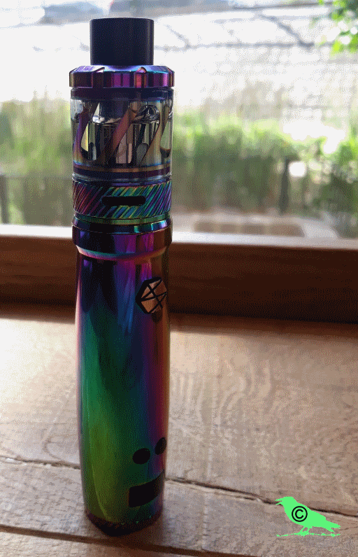
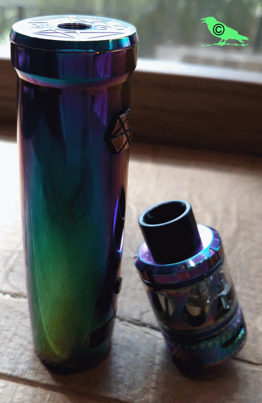
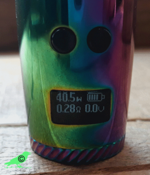

Es ist nicht alles Gold was glänzt – Der Uwell Nunchaku
Wir alle kennen die Vorfreude, wenn wir endlich unser neues Gerät in Händen halten. Im ersten Moment ist einfach alles nur toll, der Geschmack, die Technik, die Optik, alles scheint perfekt zu sein. Aber manchmal trügt der Schein. Erst nach einiger Zeit stellen wir fest, dass unser perfektes Gerät gar nicht so perfekt ist.
So erging es mir mit dem Uwell Nunchaku. Aber erstmal zu den Grunddaten.
Der Mod ist in Tubeform und kommt mit der Menüführung einer Box. Das ist mal ein großes Plus. Die Einstellungen sind intuitiv, man hat Plus, Minus und Feuertaster.
Der Mod fasst einen 18650er Akku. Dieser ist üblicherweise nicht im Lieferumfang enthalten. Mit einem Akku ist natürlich die Leistung begrenzt. Der Nunchaku Mod liefert 80 Watt die man in Schritten von 0,5 Watt einstellen kann.
Am Boden der Tube befinden sich 4 kleine Entgasungslöcher, wobei man davon ausgehen kann, dass man diese nicht braucht wenn man ordentliche und originale Akkus verwendet.
Zusammen mit dem 5 ml großen Nunchaku Tank wird man den Mod meistens bei 40 bis 50 Watt verwenden.
Aber nun zu den negativen Punkten, die mir aufgefallen sind: z.B. die Tastensperre mit Minus und Feuertaster. Diese ist völlig zwecklos. Bei aktivierter Tastensperre kann man nicht nur die Watt nicht verstellen, man kann auch nicht feuern. Die Tastensperre hat also denselben Effekt, wie das Gerät einfach mit 5-Klick auszuschalten. Es gibt aber auch eine Wattsperre. Mit Plus und Feuertaster (Achtung die Einstellung geht verloren wenn man das Gerät ausschaltet oder den Akku wechselt).
Und dann ist mir etwas aufgefallen: bei mehreren Akkus, die teilweise noch recht neu waren, hatte ich den Fehler, dass mir der Mod anzeigte, dass der Akku bereits leer wäre, obwohl er noch gut 3,8 Volt hatte. Er ließ mich dann demzufolge auch nicht mehr feuern.
Desweiteren bietet die Tube einen MikroUSB Anschluss, über die das Gerät geladen werden kann. Jedoch wird der Mod dabei so heiß, dass ich es bisher nicht gewagt habe ihn voll aufzuladen.
Kommen wir nun zum Nunchaku Tank bzw. zu den Coils. Geschmacklich kann man sich nicht beschweren. Genauso wie schon beim Uwell Crown 3 punkten die Coils mit top Geschmack, und das bei niedriger Leistung (40 Watt). Aber sie haben leider nicht die Haltbarkeit, wie die Coils des Crown 3 in Bezug auf Liquids mit Süßungsmitteln. Kaum ist der Tank damit befüllt, kokelt schon der Coil. Dadurch habe ich schon einige Coils verloren. Dies ist sehr schade, denn eigentlich sollte der Nunchaku schon auch Premium Liquids, die nun mal mit Süßungsmitteln nicht geizen, vertragen.
Es gibt im Gegensatz zum Crown 3 keine SS316 Coils, sondern nur Clapton Kanthal Coils mit 0,25 oder 0,4 Ohm. Aufgrund der ungewöhnlichen Leistungsanforderungen (40-50 Watt bei 0,25 Ohm, 45-55 Watt bei 0,4 Ohm) sind die 0,25 Ohm Coils jedenfalls besser für die Akkulaufzeit. Will man mit 0,4 Ohm dampfen, sollte man lieber einen Akkuträger mit 2 Akkus mit sich führen, sonst geht einem auf halber Strecke der Saft aus.
Da ich den Nunchaku trotz seiner Mängel gerne als mein Hauptgerät verwende, habe ich Uwell kontaktiert, um sie auf diese Probleme aufmerksam zu machen und um zu fragen, ob es bereits einen Lösungsansatz dafür gibt. Folgende Antwort habe ich erhalten:
Keine! Leider hat sich auch nach 2 Wochen Wartezeit nichts getan. Ich habe meinen Posteingang und meinen Spamordner beobachtet. Ob Uwell kein Interesse an Verbesserungen hat oder einfach nur kein Statement abgeben möchte, darüber kann ich nur spekulieren. Ich werde den Nunchaku trotzdem weiterverwenden und kann ihn mit Abstrichen auch empfehlen. Aber er ist eben kein Gerät für jedermann. Also sollte man vor dem Kauf immer abwägen, ob der Nunchaku wirklich das bietet, was man gerade braucht.

Kommentare:
|
Die Tastensperre nur für +/- funktioniert durch gleichzeitiges kurzes Drücken von + und Feuertaste. – und Feuertaste sperrt alles, + und Feuertaste nur die +/- Funktion. Die Tube hat aber trotzdem einen Bug, denn nach jedem 5-Klick-Ausschalten oder nach einem Akkuwechsel entsperrt sich alles wieder und man muss daran denken, erneut zu sperren. |
|
Vielen Dank, aber genau das steht doch schon im Artikel nur mit anderen Worten :). Lg Lilith |
|
Aber du hast das doch als negativen Kritikpunkt aufgeführt, nämlich dass alles gesperrt wird. Man kann aber wählen, ob man alles oder nur +/- sperren möchte, also eigentlich eine Erweiterung der Möglichkeiten. Überfliegt man das Geschriebene, entsteht leicht der Eindruck, dass +/- nicht alleine gesperrt werden kann, da du abschließend nur in einem Nebensatz erwähnt hast, dass auch eine Watt-Sperre möglich sei – es ist aber eine komplette +/- Sperre möglich. Ist aber auch egal, JETZT spätestens weiß es dann jeder 🙂 |
|
Ach so, noch was. Das mit den 3,8 Volt könnte daran liegen, dass dein Akku unter 3,5 Volt beim Feuern eingebrochen ist. Die Tube macht nämlich wie der iStick60 bei 3,4 Volt Schluss. Für manche Leute ist das zu früh, meine Akkus halten dadurch jahrelang, denn es ist ein akkuschonendes Verhalten. Ich feuere aber auch nur unter 20 Watt, so dass mein Akku nicht so sehr einbricht. Hat alles Vor- und Nachteile. So richtig durchdacht ist die Tube mit ihrem Kombi-Verdampfer, der ja bei einem Akku definitiv über 30 Watt benötigt, nicht, da stimme ich dir absolut zu. |